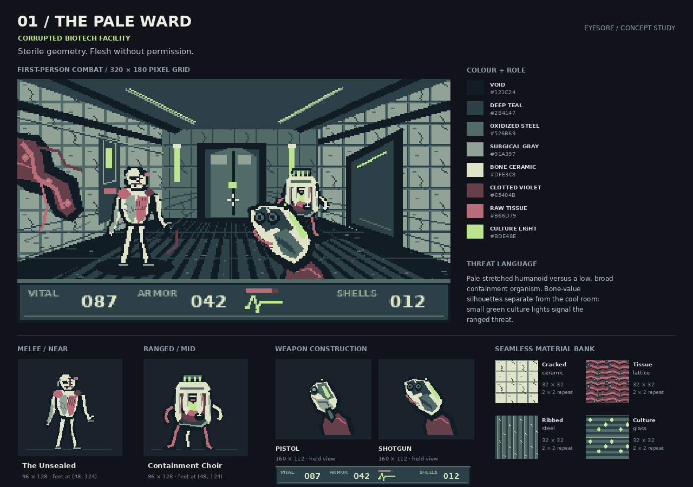
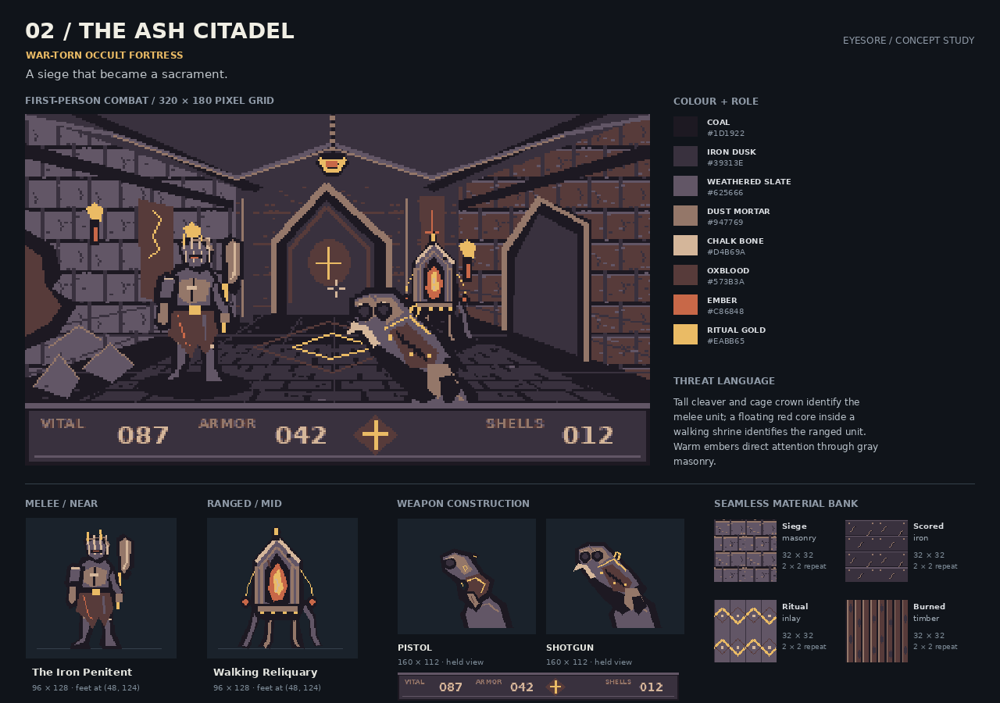
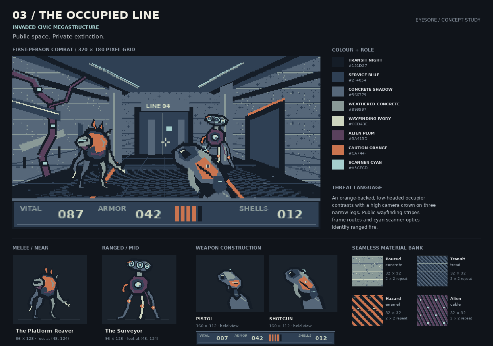

Visual revision in progress.
The drawings below are the rejected first studies. The music is retained; revised 3D concepts are being prepared.
Three equally scoped directions for a new Doom-inspired Linux game. Explore the art, hear the music and compare the physical gun sounds.
Browse each packet below. Reply in chat with your choice or requested revisions; browsing does not commit a selection.
The Pale Ward
Corrupted biotech facility · Sterile geometry. Flesh without permission.

640×360 concept composition · static artwork
Reading the fight
Pale stretched humanoid versus a low, broad containment organism. Bone-value silhouettes separate from the cool room; small green culture lights signal the ranged threat.
Production considerations
Medium-high. Organic silhouettes need careful frame-to-frame anatomy; clinical tiles can be reused widely. Translucency is represented with opaque pixel clusters.
Music · 25 seconds
Recorded guns and impacts · 10 seconds
Music with warnings · 25 seconds
Compare at the same device volume. These are sourced and edited auditions. Actual game mixing and listening approval follow after selection.
Open question
The vial glow and tissue lattice are painted cues, not dynamic effects. Two single enemy poses cannot yet prove motion or attack readability.
Palette, materials, enemy / gun designs and HUD thumbnail

The Ash Citadel
War-torn occult fortress · A siege that became a sacrament.

640×360 concept composition · static artwork
Reading the fight
Tall cleaver and cage crown identify the melee unit; a floating red core inside a walking shrine identifies the ranged unit. Warm embers direct attention through gray masonry.
Production considerations
Medium. Armor plates and masonry support modular production; cleaver timing and the shrine’s four-foot gait are the expensive animation work.
Music · 25 seconds
Recorded guns and impacts · 10 seconds
Music with warnings · 25 seconds
Compare at the same device volume. These are sourced and edited auditions. Actual game mixing and listening approval follow after selection.
Open question
A ritual motif is established, but symbols are original visual marks without a developed written language. Siege debris does not yet have collision.
Palette, materials, enemy / gun designs and HUD thumbnail

The Occupied Line
Invaded civic megastructure · Public space. Private extinction.

640×360 concept composition · static artwork
Reading the fight
An orange-backed, low-headed occupier contrasts with a high camera crown on three narrow legs. Public wayfinding stripes frame routes and cyan scanner optics identify ranged fire.
Production considerations
Medium-low for architecture, medium for creatures. Repeatable concrete and signs are economical; the surveyor’s tripod motion and reaver’s offset head need dedicated poses.
Music · 25 seconds
Recorded guns and impacts · 10 seconds
Music with warnings · 25 seconds
Compare at the same device volume. These are sourced and edited auditions. Actual game mixing and listening approval follow after selection.
Open question
Signs are spatial markers rather than lore text. The fixed screenshot has no moving scanner beam or interactive route system.
Palette, materials, enemy / gun designs and HUD thumbnail

Compare all three directions
| Direction | Readability / identity | Production considerations | Music audition |
|---|---|---|---|
| The Pale Ward | Pale stretched humanoid versus a low, broad containment organism. Bone-value silhouettes separate from the cool room; small green culture lights signal the ranged threat. | Medium-high. Organic silhouettes need careful frame-to-frame anatomy; clinical tiles can be reused widely. Translucency is represented with opaque pixel clusters. | Abelian Listening appeal awaiting your review. |
| The Ash Citadel | Tall cleaver and cage crown identify the melee unit; a floating red core inside a walking shrine identifies the ranged unit. Warm embers direct attention through gray masonry. | Medium. Armor plates and masonry support modular production; cleaver timing and the shrine’s four-foot gait are the expensive animation work. | Dragged Through Hellfire Listening appeal awaiting your review. |
| The Occupied Line | An orange-backed, low-headed occupier contrasts with a high camera crown on three narrow legs. Public wayfinding stripes frame routes and cyan scanner optics identify ranged fire. | Medium-low for architecture, medium for creatures. Repeatable concrete and signs are economical; the surveyor’s tripod motion and reaver’s offset head need dedicated poses. | The Recon Mission Listening appeal awaiting your review. |